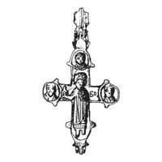
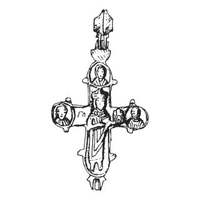

Catalog › CE-0905 · KOR2003-II.3.1.28
Encolpion întreg cu inel de agățare cu două valve, reliefuri destul de clare
sec. XI–XIII (1001–1300) · Ustie (uroci Goleatîn), regiunea Ternopil (raionul Borșciv), Ucraina · Muzeul de Studii Locale din Borșciv, inv. fără număr
double-sided reliquary cross (enkolpion), aramă; c. XI–XIII (1001–1300); found at Ustie (uroci Goleatîn), regiunea Ternopil (raionul Borșciv), Ucraina; kept at Muzeul de Studii Locale din Borșciv.




Identificare
- Categorie
- Encolpion bivalv (relicvar)
- Material
- Aramă
- Tehnică
- Turnare în relief; Gravare (incizie)
- Stare
- Întreagă
- Dimensiuni
- Î 58 × L 48 mm
Iconografie
- Avers
- Neidentificat
- Descriere avers
- Reliefuri destul de clare; compoziție standard. Inel de agățare cu două valve.
- Revers
- Neidentificat
- Descriere revers
- Compoziție standard.
- Inscripții
- БѲ (față, umărul stâng); ГЛ (revers, umărul drept)
- Limba
- Slavonă
Datare și atribuire
- Datare
- sec. XI–XIII (1001–1300)
- Centru
- Necunoscut
- Tipologie
- Korzukhina–Peskova 2003, tip II 3 1
Descoperire
- Localitate
- Ustie (uroci Goleatîn)
- Regiune
- regiunea Ternopil (raionul Borșciv)
- Țară
- Ucraina
- Context
- Descoperire izolată
Păstrare și referințe
- Colecție
- Muzeul de Studii Locale din Borșciv
- Nr. inventar
- fără număr
- Bibliografie
- G. F. Korzukhina, A. A. Peskova, Древнерусские энколпионы. Нагрудные кресты-реликварии XI–XIII вв., Sankt-Petersburg, 2003 [Korzukhina–Peskova 2003], p. 91, cat. nr. II 3 1/28, reprodusă la Табл. 40 (planșe, p. 282). Bibliografie citată în sursă: Пстигирич Сохацький 1996, 16–18.
- Figura
- Табл. 40
- Planșe
- Korzukhina–Peskova 2003, Табл. 40 (planșă fără paginație proprie în PDF; p. 282 tipărită)
- Observații
- Datare după Peskova: sec. XI–XIII. Circumstanțe: Descoperire întâmplătoare, la sfârșitul anilor 1990. Inscripții adâncite. Literele Ѳ/Ө din inscripții transcrise după tipar; de verificat pe original. Coordonate: nu sunt date în sursă.
Citare: Corpus Encolpiorum, CE-0905, Encolpion întreg cu inel de agățare cu două valve, reliefuri destul de clare, --root/piese/KOR2003-II.3.1.28/ (accesat 2026-10-20).